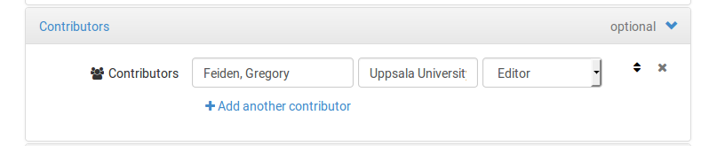
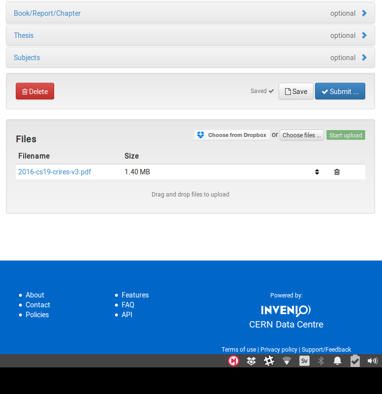

Cool Stars 19 proceedings
Proceedings for Cool Stars 19 will be entirely
electronic and freely available online. A collection of participant contributions
is made available through Zenodo, an EU funded data
and project repository. All submissions must therefore be made on Zenodo's webpage.
To facilitate accessibilty and visibility, all contributions to the proceedings will
indexed on the ADS.
Briefly, all submissions are assigned a Digital Object Identifier (DOI) number by Zenodo,
making contributions citeable. Once all contributions
are received, ADS will be notified, they will scrape the Zenodo collection, and then ADS will
index each of the contributions as part of a larger volume (Proceedings for Cool Stars 19).
To ensure that all entries are properly indexed, it is vital that each contribution include
appropriate metadata. In the tutorial below, you'll be instructed about which metadata to
include in your submission.
Submission to the arXiv in parallel with submission
to the conference proceedings is encouraged. However, if you submit to the arXiv, you
must make sure to update the metadata in your Zenodo collection properly so that it
does not get listed twice in ADS.
Types of contributions
Because the Cool Stars 19 proceedings are only online, there is a lot of flexibility
concerning what constitutes a proper contribution. Viable contributions include submitting
a the actual file with your oral presentation slides and/or your poster. You're encouraged
to submit a PDF version so that the files can be easily previewed by visitors to the repository.
However, you are free to submit any type of file that contains the full presentation.
You're not limited to these two options. It's also possible to submit a more typical
proceedings article so that you can better contextulize and describe your presentation.
If you elect to submit a typeset article, you may use any file format you wish, but we
are providing an "official" Cool Stars 19 LaTeX document class.
To download the repository, select "Clone or Download" followed by "Download ZIP".
Furthermore, you need not be limited to one of the options above, but can combine
multiple files into a single proceedings contribution. For example, your presentation
slides in comibnation with a typeset article leading the reader through the slides
or explaining the results in greater detail.
There are no page limits, but there is a submission size limit of 2 GB.
How to submit your contribution
Submitting to Zenodo is rather simple, but it's important that all metadata be
properly included so that articles get properly indexed on ADS. Below is a series
of screenshots taking you through the submission process from start to finish.
Step 01: following the link
to the submission page for Cool Stars 19.
Step 02: you'll be presented with a login screen:
If you have a Zenodo account, proceed to login. If you do not, you may login
using your GitHub or ORCID account, or you may create a new account using the "Sign Up"
button located at the top of the frame.
Step 03: Once you login, you'll be presented with an "Upload" screen:
Click the button to choose a
file on your local machine, or select the "Choose from Dropbox" to select a file located
on your Dropbox. So long as you followed the link we provided, this screen will automatically
ensure that your file is submitted to the Cool Stars 19 collection (called a "community" on
Zenodo).
Step 04: After you select a file, you'll proceed to the "New upload" screen, where you will be
able to fill out a wide variety of file metadata. Notice on the right side of the screen under "My uploads", there
is a new unsubmitted document called 'Untitled'. This is the current document you are submitting and the title
will be changed once you fill out the 'Title' field.
Step 05: Now, start filling out information about your document. First, select the type of file you have
just uploaded. Ignore the DOI field, Zenodo will take care of this for you, unless you know
for a fact that the document you're upload already has an assigned DOI. If you are unsure,
then it likely does not already have a DOI. Enter today's date for the publication date, if
it's not automatically done for you. Enter the title of your article/poster/talk.
Enter the name of each author and their affiliation. NOTE names should be formatted
as "Family Name, First name". Thus, a submission by Gregory Feiden and Alexis Lavail, should be written
as shown below.
You will be asked to fix this if you do not do it correctly the first time.
It's important for ADS that this be done properly. Continue to fill in the requeted
information, including the Description (i.e., Abstract), various keywords if you'd like
to add keywords, and other notes you feel are important for the contribution (e.g., Poster
number, or a name of a splinter session the contribution if affiliated with.)
Step 07: Choose access rights and a license for your work. You are
strongly encouraged to select Open Access and a permissive license so that people
can easily access your work.
Step 08: If there are no communities listed, select the Cool Stars
19 community called "The 19th Cambridge Workshop on Cool Stars, Stellar Systems, and the
Sun". This should already be done for you, but just in case.
Step 08-a: Optionally, you may specify funding information.
Step 08-b: If you submitted to the arXiv and/or your aricle was already indexed
to ADS, add the related identifying information so that Zenodo and ADS will link all of the
contributions into one neat little package.
Step 09: Open the "Contributors" section by clicking on it. Add Gregory A. Feiden (Uppsala University, University of North Georgia) as an editor. Again, note that the name must be "Feiden, Gregory A." Select Editor from the dropdown menu.
Step 10: Given credit where credit is due! If you referenced various works in your article, talk, or poster, give them credit by adding the reference information (yes, citations will be counted on ADS, but ADS will only know about them if you enter the information in the "References" section). See the image below about how to format the references:

This is basically a copy-paste of a bibliography.
Step 11: Fill out information about the Workshop as shown below:
Step 12: Review the information to make sure you've done everything properly and the clikc submit! Or, if you'd like to connect another file to the submission, select another file.
Step DONE: Congratulate yourself on a job well done.